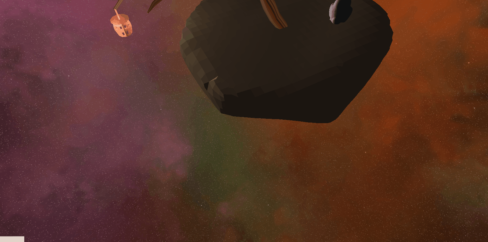
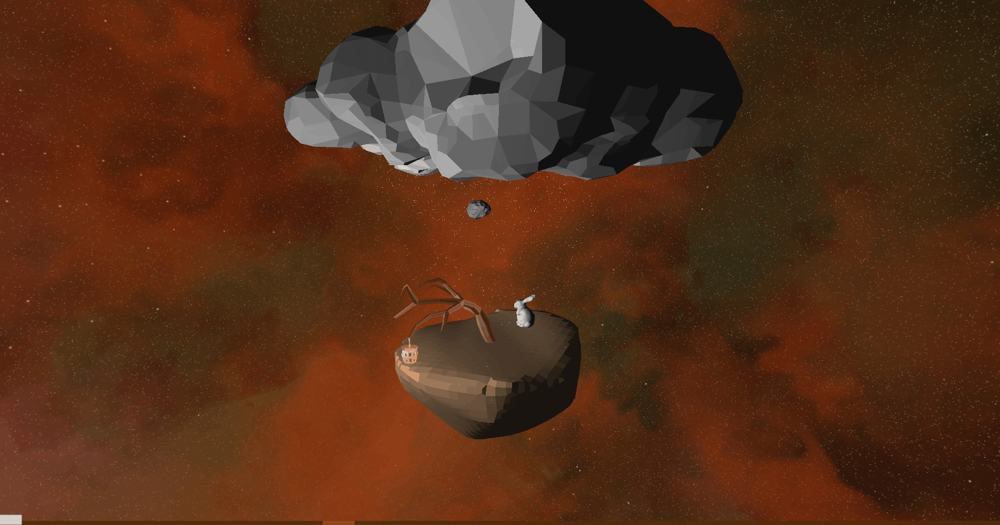
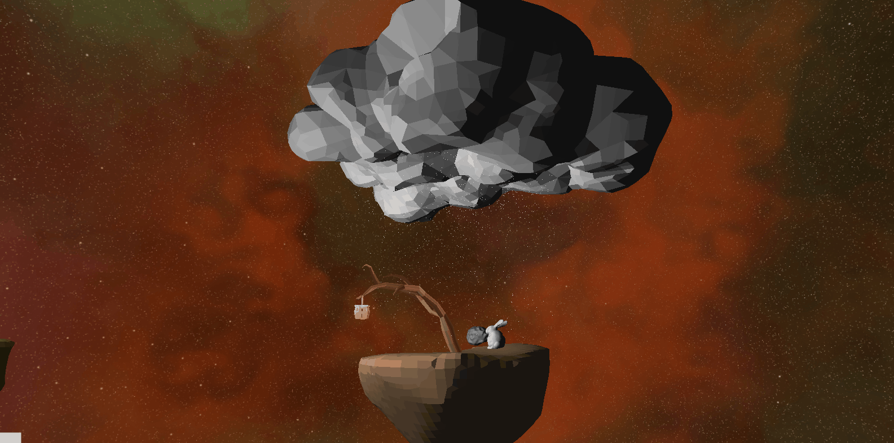

Gabriel Young's Portfolio
Hi, I'm Gabriel, a Computer Science student from Cal Poly SLO.
Projects:
Orbiting Islands
A computer graphics project with original blender models and a simple physics simulation
Orbiting Islands
This Project was made for CSC 471 at Cal Poly in fall quarter 2021.
For my final project, I created two floating islands, and asteroid in blender, and put them together in a kinematics model to orbit each other. My initial idea was to model something like the three-body problem, with three bodies of roughly equal mass exerting orbital forces on each other. Due to time constraints, it proved impractical to find an initial stable configuration to model. Therefore, I decided to model a more traditional orbital system with one body having a dominant amount of mass. In this project that body is the largest island.
For this project I made sure to implement technically challenging features but making a visually appealing and cohesive scene was very important to me, hence the decision to create most of the models.

I implemented:
- Collision detection
- Orbital Kinematics model
- Animated particle system
- Blinn-Phong lighting
- Texture mapping
Collision detection
Collisions are implemented as perfectly elastic, using vector math. A collision occurs when the distance between two bodies is less than or equal to the sum of their radii. When a collision occurs, the vector normal of collision is computed. Then the dot product of the difference in velocities and the vector normal of collision is computed to get the relative velocity of the bodies along the vector normal of collision. This relative velocity is subtracted and added to the velocities of the bodies, and then mass weighting is applied.
After the collision, the asteroid follows a curved path because of gravitational force
Orbital Kinematics model
Each body has a radius, mass, position, velocity, and acceleration. These, along with the gravitational constant, are initially set manually to create a stable system. When the model runs, the acceleration is computed according to Cowell’s method (for Orbit Modeling) and velocity and position are set accordingly. This was implemented such that all the bodies exert gravitational force on each other. In practice however, the motions of the bodies are mostly determined by the largest island as it had the largest mass by far.
Cowell's method
Animated particle system
The snow falling from the cloud onto the large island is what constitutes the particle system. Particles are spawned randomly within a disk in the cloud itself and accelerate downward for a given time. The particle positions are also updated according to the position of the large island itself.
The particles may be a bit hard to see, but if you enlarge the image, you should be able to see the particles accelerating
Blinn-Phong lighting
I implemented Blinn-Phong lighting for this project with ambient, diffuse, and specular components. There is a light source attached to the large island and a second light source attached to the smaller island.
Light reflected on the cloud by the light source from the little island
Texture mapping
I also implemented texture mapping on the trees, lantern, and tank. As a note, the tank turret is animated to rotate side to side and the lantern’s animated to become brighter and dimmer.

Can you spot the tank? It's very well camouflaged
References
Collisions: vector-based collisions
Orbits: Cowell's method
Blender Stuff: Low Poly Tree
Low Poly Island
hehe